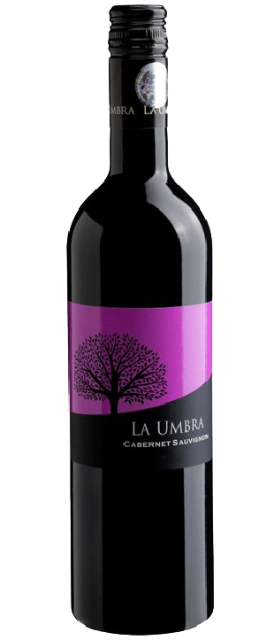
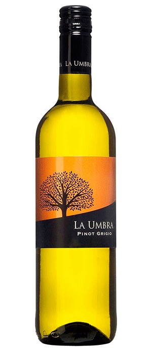
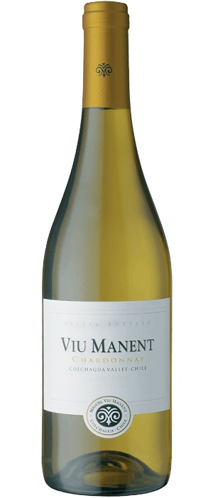
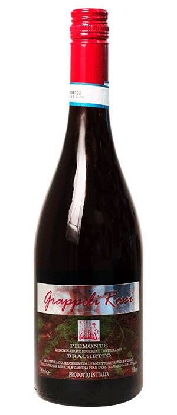

2017 La Umbra Cabernet Sauvignon Dealu Mare Halewood

Alle druer til denne Cabernet Sauvignon håndhøstes selekteres og gærer og lager derefter på ståltank. En moden og saftig Cabernet Sauvignon med solbær og bløde krydret noter. Fantastisk til en bøf.
Podere Montepulciano d'Abruzzo Umani Ronchi, er en rubinrød vin som byder på en appetitvækkende frisk bouquet af solbær, blomme og kirsebær. Smagen er saftig og smækker, middelfyldig og behagelig afrundet.
Gran Reserva Malbec byder på en bouquet af svesker, salvie og mokka samt en smag med noter af mørk chokolade og søde krydderier der perfekt kombineret med runde saftige tanniner giver en elegant og velbalanceret vin.
2017 La Umbra Cabernet Sauvignon Dealu Mare Halewood

La Umbra Pinot Grigio på håndhøstede druer, er en læskende frisk og aromatisk hvidvin med duft af æble, pære, nektarin og kaprifolie som går igen i den saftige smag.
2018 Viu Manent Chardonnay Reserva Est. Collection Colchagua

Viu Manent Chardonnay er en flot hvidvin med en fyldig og indtagende bouquet af blomster og frugter. Smagen er rig og fyldig med masser af god frugt, samt friskhed i den elegante eftersmag.
Le Paradou er resultatet af et samarbejde mellem nogle af områdets andre kvalitetsproducenter og Château Pesquié, man har brugt Viognier druer fra egne, unge vinstokke og købt...
Den appetitvækkende bouquet byder på røde bær og modne røde frugter. Det er en frugtig, sprød og forfriskende rosé, som er genial som terrassevin eller som ledsager til gastronomi
Bouqueten er frugtig og luftig med strejf af røde bær lidt krydderi, smagen er meget frisk og elegant, og har en fin rund, finish. Navnet hentyder til de kølige havvinde...
Vinen har en imponerende dyb, pink farve, og en frugtig bouquet af bær. Smagen er frugtig, frisk, sprød og slutter i en tør finish. Den er velegnet som ledsager til mad eller som aperitif.
Den kaldes Drappier Brut Nature Zéro Dosage Sans Souffre Blanc de Noirs. Den er altså uden svovl men også uden dosage, og ufiltreret og udelukkende fremstillet på Pinot Noir.
Den kaldes Drappier Brut Nature Zéro Dosage Sans Souffre Blanc de Noirs. Det er Roffiaen, der står bag den spændende nyhed. Champagnen er en assemblage, dvs...
2018 Grappoli Rossi Brachetto Piemonte Cascina Pian d'Or

Brachetto er en lille, sødmefuld drue med blåligt skind Vinens gæring standses inden al sukkeret er omdannet til alkohol. Resultatet er en let perlende rødvin...